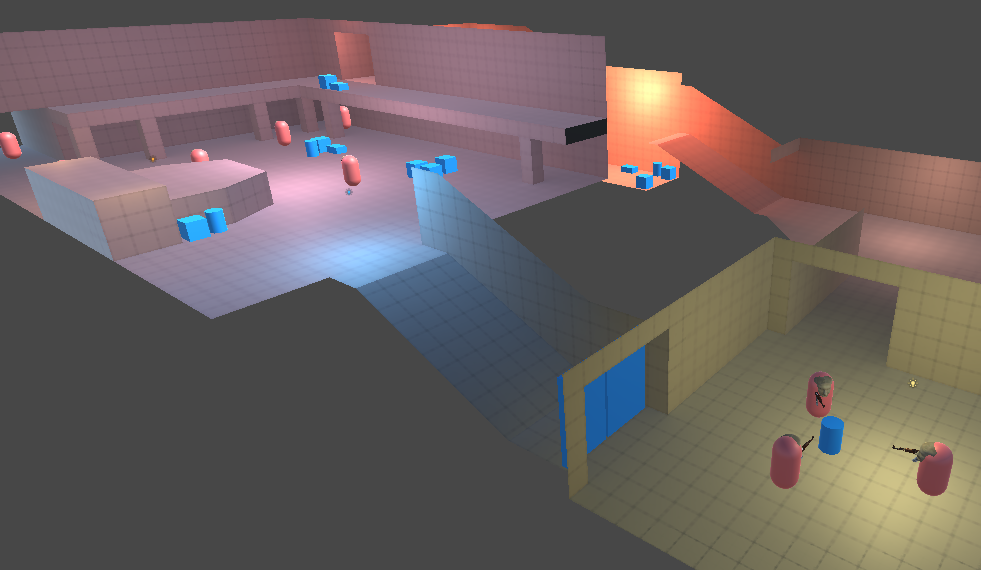

3D MeshMash
Title: Crash Landed
Medium: 3D model
Attributes: chrisonciuconcepts, Low Poly Space Ship, retrieved from: https://sketchfab.com/3d-models/low-poly-space-ship-587941c9c11742c6b82dfb99e7b210b9
My childhood is filled with moments of wishing I could travel to other worlds. I have always want to make a difference somewhere and feel important, however, this conflicted with my young introverted self. My imagination provided my that purpose I wanted instead of my real life.
